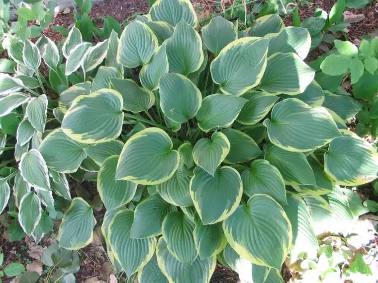

{kind=link}
**sigh** (gotta love technology some days…)
So, why is it that the shrubs are so often overlooked, and yet, in their own way, they are every bit as deserving of a second glance as the most beautiful flower, are they not? I am guilty as charged of sometimes walking past them, but never without noticing, and recently, I even stopped to snap their photo. They were ever so gracious about the whole thing. But honestly, I think they rather enjoy their lot of being unobtrusive, shade-loving, quiet splashes of green. They live for not being noticed, for remaining neutral.
I feel like the shrubs right now. I am feeling neutral as I position myself for change. I am not a shrub by nature. I am a bright-colored flower always looking for sun and the beauty of other flowers. Sometimes I find it, sometimes not, but I’m always looking. However, for now it’s the shrubs with which I identify, and gladly so. I just want to stay still a while, to rest up a bit, to get ready for what’s next. Because I’m not entirely sure what that is, I am finding solace in the cool dirt, the leaves above that are offering shade, and the chance to watch others walk past on their way to somewhere else. I need this time of quiet settling.
I think we all need times to just be shrub-like. And as it turns out, being green isn’t so bad after all.
{kind=link}